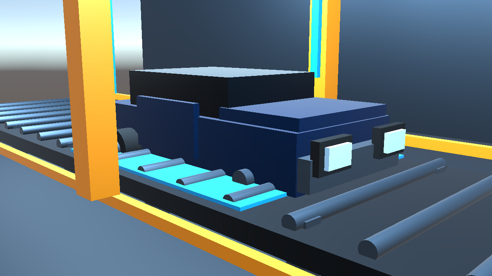
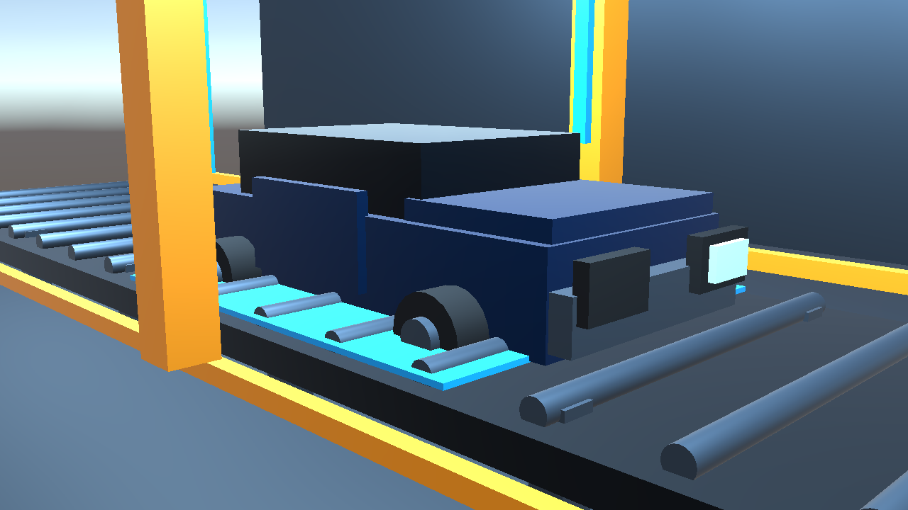
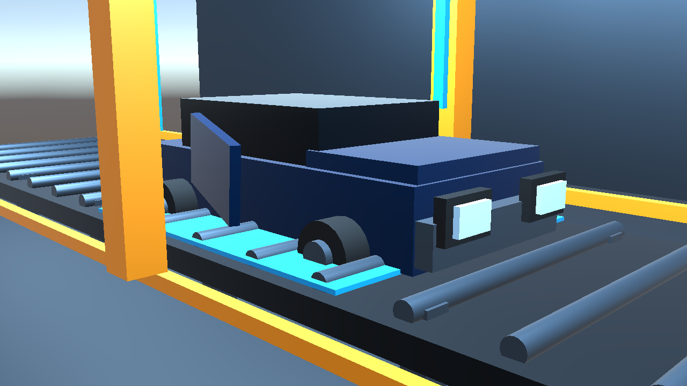

1·2. 프로젝트 현황 및 개요 제목 · 요약 · 팀 · 문제 · 사용자 · 목표
요약공정 이미지를 분석하고 매뉴얼 기반 대응과 작업자 승인, 조치 후 재검사까지 수행하는 자동차 조립 이상 대응 AI Agent입니다.
문제휠·헤드라이트 누락과 도어 이상은 안전에 직접 영향을 주며, 육안 검사만으로는 누락과 대응 지연이 발생할 수 있습니다.
사용자자동차 조립라인 검사 작업자, 품질 담당자, 생산라인 관리자를 핵심 사용자로 설정했습니다.
목표이상 감지 → 매뉴얼 검색 → 위험도·대응 계획 → 작업자 조치 → 재검사를 연결해 안전하게 RESOLVED 상태까지 관리합니다.
3. 개발 세부 내용 시스템 구조 · 활용 데이터 · AI Tool/알고리즘 · 단계별 개발
1Perception
이미지 품질 검사 · 객체 탐지 · Golden Sample 비교 · Multimodal 교차 검증
2Reasoning & Tools
결함 표준화 · 매뉴얼 검색 · 위험도 판단 · 근거와 대응 계획 생성
3Action & Feedback
작업자 승인 · Unity 라인 제어 · 재검사 · RESOLVED/REANALYZE 상태 전이
시스템 구성도
Unity Camera
Image Upload5개 검사 시나리오
Image Upload5개 검사 시나리오
›
OpenCV
Quality Gate밝기·선명도 검증
Quality Gate밝기·선명도 검증
›
YOLO-World
Detection차량·부품 위치 탐지
Detection차량·부품 위치 탐지
›
Gemini Vision
Cross Check정상 기준 이미지 비교
Cross Check정상 기준 이미지 비교
›
Manual Search
Risk Planning원인·위험도·조치 생성
Risk Planning원인·위험도·조치 생성
›
SQLite Memory
Unity Control이력·승인·재검사·복구
Unity Control이력·승인·재검사·복구
활용 데이터Unity 5종 시나리오 이미지 · 정상 Golden Sample · 제조 매뉴얼 JSON · SQLite 검사/재검사 이력
AI Tool/알고리즘OpenCV 품질 임계값 · YOLO-World 개방형 객체 탐지 · Gemini Structured Output · 키워드 매뉴얼 검색 · 위험도 우선 규칙
4. 구현 결과 핵심 기능 · Streamlit 대시보드 · Unity 실제 입력 · 대표 테스트
정상 기준
TC01 정상 차량NORMAL

TC02 휠 누락CRITICAL

TC03 헤드라이트 누락HIGH

TC04 도어 조립 이상HIGH
대표 테스트 검증 결과
5 / 5PASS · 100%
ID
입력 / 기대 결과
검증
TC01
정상 차량NORMAL · LOW · NO_ACTION
PASS
TC02
휠 누락ABNORMAL · CRITICAL · STOP_LINE
PASS
TC03
헤드라이트 누락ABNORMAL · HIGH · INSPECT_PART
PASS
TC04
도어 조립 이상ABNORMAL · HIGH · REASSEMBLY
PASS
TC05
판별 불확실 이미지UNKNOWN · HUMAN_REVIEW_REQUIRED
PASS
{
"status": "ABNORMAL",
"defect": "front_right_wheel_missing",
"confidence": 0.95,
"risk_level": "CRITICAL"
}
"status": "ABNORMAL",
"defect": "front_right_wheel_missing",
"confidence": 0.95,
"risk_level": "CRITICAL"
}
Streamlit Dashboard 구현 이미지 입력 · Tool 실행 로그 · JSON 판정 · 매뉴얼/대응 계획 · SQLite 이력 · 재검사
Agent Trace Vision → Detection → Manual Search → Risk → Planning → Approval
Memory/Feedback 이전 판정·결함·대응·재검사 저장 → RESOLVED / REANALYZE
Memory/Feedback 이전 판정·결함·대응·재검사 저장 → RESOLVED / REANALYZE
5. 기대효과 및 성과·한계 현장 가치 · 구현 성과 · 향후 개선
기대효과• 다중 Vision 분석으로 검사 누락 위험 감소
• 매뉴얼 기반 대응 절차 표준화
• 위험도별 라인 정지로 초동 대응 단축
• 매뉴얼 기반 대응 절차 표준화
• 위험도별 라인 정지로 초동 대응 단축
구현 성과• 대표 시나리오 5/5 기능 검증
• 감지–조치–재검사 E2E 구현
• Unity 양방향 제어와 HITL 안전 정책 적용
• 감지–조치–재검사 E2E 구현
• Unity 양방향 제어와 HITL 안전 정책 적용
한계 및 향후 개선합성 이미지 중심의 제한된 MVP 검증이며 전용 YOLO 학습 전 단계입니다. 실제 공정 데이터 확보, 부품별 라벨링·파인튜닝, 실제 카메라/MES·PLC 연동 및 성능 평가가 필요합니다.